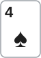

안녕하세요. B24에서 EV(기대값)를 동전과 주사위로 배웠죠. 오늘은 그 EV를 실제 리버 콜 한 판에 꽂아 볼게요.
리버 콜은 이기거나 지거나, 일이 딱 두 개뿐이라 EV를 연습하기에 가장 좋은 장면이에요. "얻는 것"과 "잃는 것"을 따로 계산해서 빼고, 그 차이가 어디서 나오는지까지 따라가 볼게요.
이 글에서 배울 것
- 리버 콜의 EV를 이길 때 몫 − 질 때 몫으로 나눠 손으로 계산하는 법
- 돈의 배수(버는 돈이 잃는 돈의 몇 배인가)와 횟수의 배수(질 때가 이길 때의 몇 배인가)를 나란히 놓으면 어느 몫이 큰지 보이는 이유
- EV 식을 정리하면 (승률 − 필요 에퀴티) × 콜한 뒤 팟이 되는 과정, 그래서 벳 크기가 EV를 어떻게 바꾸는지
오늘의 핸드
Hero (BB 자리 · 스택 100BB)
자리 이름 BB와 금액 단위 BB(빅 블라인드 몇 개만큼)는 다른 뜻이에요. "BB 자리, 스택 100BB"는 "빅 블라인드 자리에 앉아 빅 블라인드 100개만큼의 칩을 가졌다"는 뜻이에요.

프리플랍
상대(BTN) 2.5BB 오픈 → SB 폴드 → Hero 콜
팟 5.5BB
플랍 · 팟 5.5BB



Hero 체크 → 상대 1.75BB 벳(팟의 3분의 1쯤) → Hero 콜
Hero는 6 포켓페어. 보드의 K·Q보다 낮아서, K나 Q가 들어간 페어를 가진 상대에게는 져요.
턴 · 팟 9BB


Hero 체크 → 상대 4.5BB 벳(하프팟) → Hero 콜
9가 나와서 이제 9가 들어간 페어에도 져요.
리버 · 팟 18BB


Hero 체크 → 상대 6BB 벳(팟의 3분의 1) → Hero는 콜? 폴드?
Hero 핸드 이름은 그대로 포켓페어(보드 중간)예요. K·Q·9가 들어간 페어에 져요.
결론부터 말할게요. 오늘 가정에서는 콜이 이득입니다. EV는 +1.5BB, 콜할 때마다 평균 1.5BB씩 벌어요.
1단계. 콜하려면 몇 번 이겨야 하나 (필요 에퀴티)
용어 한 줄
필요 에퀴티는 "콜해서 본전이 되려면 최소한 이만큼은 이겨야 한다"는 확률이에요. B24에서 본 말로 하면, EV가 0이 되는 승률이죠.
경품 뽑기로 생각해 보기
비유하면 5천 원 내고 2만 원짜리 경품을 노리는 뽑기예요. 내는 돈이 작으니 가끔만 당첨돼도 본전이 되죠. 오늘 Hero는 6BB를 내고, 이기면 원래 팟 18BB와 상대 벳 6BB를 합친 24BB를 순이익으로 가져와요.
공식으로 구하기
B06에서 배운 공식, 우리가 낼 돈 ÷ 콜한 뒤 전체 팟이에요.
필요 에퀴티 = 6(Hero 콜) ÷ (18(원래 팟) + 6(상대 벳) + 6(Hero 콜)) = 6 ÷ 30 = 20%
팟의 3분의 1 벳이라 5번 중 1번이면 본전이에요.
2단계. 오늘의 가정 — Hero가 이길 확률
상대가 벳하는 핸드를 두 묶음으로
① Hero를 이기는 핸드. 보드 K♥ Q♦ 4♠ 9♣ 2♦에서 66을 이기는 핸드를 빠짐없이 보면 이래요.
- K·Q·9가 들어간 페어(예: A♠K♣, Q♥J♣, 9♥8♥). K6·Q6·96도 여기 들어가요
- 66보다 높은 포켓페어 77·88·TT·JJ·AA
- 셋: KK·QQ·99·44·22
- 투페어: KQ·K9·K4·K2·Q9·Q4·Q2·94·92·42
- 스트레이트: JT(9-T-J-Q-K) 하나뿐
보드에 같은 무늬가 두 장을 넘지 않아서 플러시는 없어요. Hero와 비기는 핸드는 남은 6♦6♠ 하나예요.
② Hero가 이기는 핸드. ①과 6♦6♠를 뺀 나머지 전부예요.
- 블러프(이길 수 없는 핸드로 상대를 접게 하려는 벳): A-J·A-T처럼 A-K-Q-J-T 스트레이트를 노리다 빗나간 핸드, J-8·T-8처럼 턴 9 뒤로 가운데 한 장을 기다리다 빗나간 핸드
- 66보다 약한 페어: A4·A2처럼 4나 2가 들어간 페어, 포켓페어 55·33
- 페어가 없는 핸드: A-7, J-7 같은 높은 카드
헷갈리기 쉬운 두 가지를 짚을게요. 6이 한 장 든 핸드(A6·J6·T6·86·76 등)는 보드에 6이 없어서 6 페어가 못 돼요. 그냥 높은 카드라 Hero가 이겨요(K6·Q6·96은 K·Q·9 페어라 ①이에요). 또 64·62는 투페어처럼 보이지만 6은 짝이 없으니 4 페어·2 페어일 뿐이라, 이것도 Hero가 이겨요.
25%라는 가정
상대가 리버에 작게 거는 이유는 양쪽에 다 있을 수 있어요. ① 센 핸드는 "작게 걸어야 콜을 받는다"고 보고 작게 걸 수 있고, ② 쪽은 약한 페어로 "조금만 더 받자", 또는 블러프로 "싸게 접게 해 보자"일 수 있죠. 그래서 작은 벳 하나만으로 어느 쪽인지 단정할 수는 없어요.
오늘은 "이 상대가 이렇게 벳할 때 Hero가 이길 확률은 25%", 즉 4번 중 1번이라고 가정할게요. 상대가 4번 벳하면 3번은 ①, 1번은 ②라는 뜻이에요.
3단계. 나란히 놓고 비교하기
먼저 B14에서 연습한 비교부터 해요.
| 확률 | |
|---|---|
| 콜에 필요한 에퀴티 | 20% |
| Hero 가정 승률 | 25% |
25% > 20% → 콜 쪽이에요. 이제 "얼마나" 이득인지 EV로 재 볼게요.
4단계. EV 계산 — 얻는 것과 잃는 것을 따로
① 이길 때 몫
이기면 24BB를 벌어요. 이길 확률 25%를 곱하면 0.25 × 24 = 6BB.
② 질 때 몫
지면 Hero 콜 6BB를 잃어요. 질 확률 75%를 곱하면 0.75 × 6 = 4.5BB.
플랍·턴에 낸 칩은 콜하든 폴드하든 이미 팟에 있어서 여기 넣지 않아요("여기까지 넣은 게 아깝다"는 생각은 B26에서 자세히 다뤄요).
③ 빼기
EV = 0.25 × 24 − 0.75 × 6 = 6 − 4.5 = +1.5BB
폴드의 EV는 0BB. +1.5BB > 0BB이니 콜이에요.
확인 — 4번 콜하면?
- 1번 이김: 24BB 벌어요
- 3번 짐: 6BB씩 → 18BB 잃어요
- 합계: 24 − 18 = +6BB → 한 번에 평균 +1.5BB
EV 식과 같은 답이죠. EV는 결국 "여러 번 했을 때 한 번 평균"이에요.
왜 그럴까: 돈은 4배, 횟수는 3배 — 큰 배수가 이겨요
돈의 배수 = 팟오즈
이기면 24BB, 지면 6BB. 24 ÷ 6 = 4, 버는 돈이 잃는 돈의 4배예요. 이게 B06에서 배운 팟오즈, "4 대 1"이에요.
4 대 1이면 "4번 지고 1번 이겨도 본전"이에요. 이긴 1번에 24BB, 진 4번에 6 × 4 = 24BB니까요. 그래서 4 + 1 = 5번 중 1번, 1단계의 필요 에퀴티 20%가 나와요.
횟수의 배수 = 승률
이번엔 횟수예요. 질 확률 75%, 이길 확률 25%라 0.75 ÷ 0.25 = 3, 질 때가 이길 때의 3배예요. "몇 대 1"로 말하면 3 대 1이죠.
두 배수를 나란히 놓으면
이길 때 몫은 "큰 돈 × 드문 횟수", 질 때 몫은 "작은 돈 × 잦은 횟수"예요. 두 몫의 크기를 나눠 보면 이렇게 돼요.
(0.25 × 24) ÷ (0.75 × 6) = 6 ÷ 4.5 = 4 ÷ 3
돈에서 4배 앞서고, 횟수에서 3배 뒤져요. 4가 3보다 크니까 이길 때 몫이 이겨요.
이게 무슨 뜻이냐면, "돈의 배수(팟오즈) > 횟수의 배수"와 "승률 > 필요 에퀴티"는 같은 말이라는 거예요. 팟오즈 4 대 1은 "5번 중 1번 이상이면 남는다"이고, Hero는 3 대 1, 곧 4번 중 1번 이기니 그 기준을 넘죠. 다만 4와 3이 가까워서, 두 몫도 6BB와 4.5BB로 가깝고 남는 건 1.5BB예요.
EV를 한 줄로 바꿔 쓰면
같은 이야기를 식으로 이어 보면 이래요. 승률이 들어간 것끼리 모으면 됩니다.
EV = 승률 × 24 − (1 − 승률) × 6 = 승률 × 30 − 6 = (승률 − 6 ÷ 30) × 30
6 ÷ 30은 필요 에퀴티, 30은 콜한 뒤 팟이에요. 그래서 EV = (승률 − 필요 에퀴티) × 콜한 뒤 팟이 돼요.
(0.25 − 0.2) × 30 = 1.5BB
4단계와 똑같죠. 이 식으로 보면 EV는 승률이 기준선을 얼마나 넘었나 × 팟이 얼마나 큰가예요. 같은 차이라도 팟이 크면 이득이 커지고, 승률이 기준선 아래로 내려가면 괄호 안이 마이너스가 되어 EV도 마이너스가 돼요.
벳 크기는 돈의 배수를 바꿔요
상대가 더 크게 걸면 무엇이 바뀔까요? 승률(횟수의 배수)은 그대로라도 돈의 배수가 줄어들어요. 잃는 돈이 커지는 만큼 버는 돈은 덜 커지니까요.
돈의 배수가 횟수의 배수 3 아래로 내려가면 질 때 몫이 이기게 돼요. 같은 66, 같은 25%라도 벳 크기에 따라 이득인 콜이 손해인 콜로 바뀔 수 있는 이유예요.
자주 하는 실수
실수 1. "이기면 24BB나 버니까 콜" 버는 돈만 보는 습관이에요. 오늘은 24BB를 4번 중 1번만 벌고, 6BB를 4번 중 3번 잃어요. 이길 때 몫(6BB)과 질 때 몫(4.5BB)을 나란히 놓아야 이득이 1.5BB라는 게 보여요. 대신 언제나 돈의 배수와 횟수의 배수를 같이 봐요.
실수 2. "EV +1.5BB니까 이번 콜로 1.5BB를 번다" 실제 한 판의 결과는 +24BB 아니면 −6BB뿐이에요. B24에서 본 것처럼 EV는 판이 쌓여야 드러나는 평균이라, 오늘 콜하고 졌다고 잘못된 콜이 아니고 이겼다고 대단한 콜도 아니에요. 대신 결과가 아니라 콜할 때 두 몫을 제대로 셌는지로 평가해요.
실수 3. "66은 K·Q·9 페어에만 진다" 보드 위 카드만 보고 지는 핸드를 떠올리면 ① 묶음을 작게 보기 쉬워요. 2단계에서 셌듯이 66은 77·88·TT·JJ·AA, 셋 다섯 가지, 투페어 열 가지, JT 스트레이트에도 져요. 반대로 A6·64처럼 6이 들어 있어 무서워 보이는 핸드에는 이기고요. ①을 작게 보면 승률을 실제보다 높게 잡아서, 손해인 콜을 이득으로 읽을 수 있어요. 대신 페어·포켓페어·셋·투페어·스트레이트·플러시 순서로 보드를 한 번씩 훑어요.
"턴에서도 콜했는데, 그때 EV도 이렇게 계산하면 돼요?"
좋은 질문이에요. 식은 똑같이 쓸 수 있지만, 그 숫자를 최종 결과라고 말할 수는 없어요.
턴에서 콜하면 리버에 상대가 또 벳할 수 있어요. 그러면 Hero가 더 낼 돈도, 이기는 경우 받는 돈도 달라지죠. 이번 콜 하나의 EV로는 판 전체를 다 담지 못해요.
리버 콜은 다음 베팅이 없어서 이기거나 지거나 두 가지로 끝나요. 그래서 오늘처럼 EV 하나로 깔끔하게 정리돼요. 뒤에 베팅이 남은 경우를 묶어 보는 법은 중급 I09에서 배워요.
숫자가 뒤집히는 지점
기준은 두 가지예요.
- 상대 벳 크기가 바뀌면: 필요 에퀴티가 다시 계산돼요. 그 값이 Hero 승률(25%)보다 높아지면 폴드, 낮으면 콜
- Hero 승률이 바뀌면: 지금 필요 에퀴티(20%)보다 높은지 낮은지만 보면 돼요
선생님의 한마디
리버에서 EV를 구할 때는 이 순서로 칸을 채워요.
- 벳 크기로 돈의 배수(몇 대 1)부터 떠올리기: 1/3팟이면 4 대 1
- 승률 어림을 횟수의 배수로 바꿔 나란히 놓기: 4번 중 1번이면 3 대 1
- 두 배수가 가까우면, 승률 어림을 한 번 더 의심해 보기
연습 문제 (같은 보드, 같은 Hero 핸드)
홀덤학습 에퀴티 계산기에서 내 카드를 고른 뒤 [콜 수익] 칸에 지금 팟(상대 벳 포함)과 콜 금액을 넣으면 필요 에퀴티가 나와요. 지금 팟 칸에는 팟 18BB에 상대 벳을 더한 값을 넣어요. EV는 직접 계산해 보세요.
문제 1. 벳은 6BB 그대로인데, 이 상대는 ②를 덜 섞어서 Hero 가정 승률이 15%라면 EV는?
정답 보기
폴드. EV = 0.15 × 24 − 0.85 × 6 = 3.6 − 5.1 = −1.5BB. 이길 때 몫(3.6BB)보다 질 때 몫(5.1BB)이 커졌어요.
문제 2. Hero 가정 승률은 25% 그대로인데, 상대가 18BB(팟벳)를 걸었다면 EV는?
정답 보기
폴드. 이기면 원래 팟 18BB + 상대 벳 18BB = 36BB, 지면 18BB. EV = 0.25 × 36 − 0.75 × 18 = 9 − 13.5 = −4.5BB. 돈의 배수가 36 ÷ 18 = 2로 줄었는데 횟수의 배수는 여전히 3이라, 질 때 몫이 이겼어요.
핵심 정리
- 리버 콜의 EV = 이길 확률 × (원래 팟 + 상대 벳) − 질 확률 × 이번 콜
- 이길 때 몫은 "큰 돈 × 드문 횟수", 질 때 몫은 "작은 돈 × 잦은 횟수". 둘의 차이가 이득이에요
- 돈의 배수(팟오즈) > 횟수의 배수면 이길 때 몫이 커요. 이건 "승률 > 필요 에퀴티"와 같은 말이에요
- EV를 정리하면 (승률 − 필요 에퀴티) × 콜한 뒤 팟. 기준선을 넘은 만큼 × 팟 크기가 이득이에요
- 66을 이기는 핸드는 보드를 보고 페어부터 스트레이트까지 빠짐없이 세요
정리하며
오늘은 리버에서 1/3팟 벳을 맞은 66으로 EV를 직접 계산했어요.
기준선 20%를 먼저 구하고, 가정 승률 25%로 콜 쪽이라는 걸 확인한 뒤, 이길 때 몫 6BB와 질 때 몫 4.5BB를 빼서 +1.5BB를 얻었죠. 돈은 4배 앞서고 횟수는 3배 뒤져서 두 몫이 가까워졌고, 그 작은 차이가 이득이었어요. 그리고 이 차이를 식으로 정리하면 기준선을 넘은 만큼 × 팟이라는 것도 봤어요.
다음 글 B26에서는 반대로 손해인 콜을 계속할 때 무슨 일이 생기는지 봐요. "한 번만 더 보자" 하고 따라가는 콜의 작은 마이너스가 쌓이면 얼마가 되는지 다뤄요.
AI 작성 · 숫자는 계산 검증 · 가정 승률 기준 · 리버 마지막 결정이라 콜 손익이 최종 결과